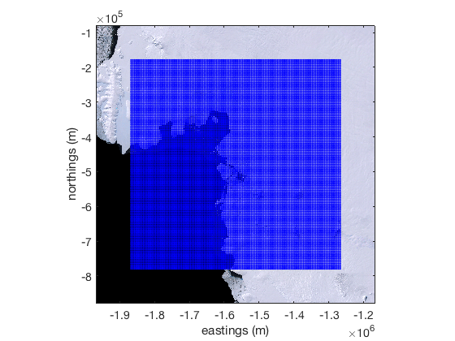
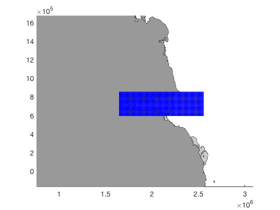

psgrid documentation
psgrid is part of Antarctic Mapping Tools for Matlab (Greene et al., 2017). Click here for a complete list of functions in AMT.
This function creates a grid of specified spatial resolution in polar stereographic coordinates.
Contents
Syntax
[lat,lon] = psgrid(CenterLat,CenterLon,width_km,resolution_km) [lat,lon] = psgrid(CenterX,CenterY,width_km,resolution_km) [lat,lon] = psgrid(CenterName,width_km,resolution_km) [x,y] = psgrid(...,'xy')
Description
[lat,lon] = psgrid(CenterLat,CenterLon,width_km,resolution_km) returns a grid of width_km width in kilometers, resolution_km resolution in kilometers, centered on the location given by CenterLat, CenterLon. If width_km is a two-element vector, the first element is interpreted as width and the second element is height. If resolution_km is a two element vector, the first element is interpreted as horizontal resolution and the second element is interpreted as vertical resolution.
[lat,lon] = psgrid(CenterX,CenterY,width_km,resolution_km) centers the grid on polar stereographic coordinate (CenterX,CenterY) in meters. Polar stereographic meters automatically detected if absolute values exceed normal values of geo coordinates.
[lat,lon] = psgrid(CenterName,width_km,resolution_km) centers a grid on any location or feature found in the SCAR database.
[x,y] = psgrid(...,'xy') returns a grid in polar stereographic meters (ps71).
Example 1
Get an 600 km wide, 5 km resolution grid of geo coordinates centered at (75°S,107°W):
[lat,lon] = psgrid(-75,-107,600,5);
We can show the grid on a map as blue dots atop a Landsat Image Mosaic of Antarctica image using the lima function:
lima(-75,-107,800,'xy') plotps(lat,lon,'b.')
Example 2
In a standard polar stereographic projection, Amery Ice Shelf is wider than it is tall. Let's create a 10 km grid over Amery and make it 900 km wide by 250 km tall. Also, we'll include the 'xy' option to return polar stereographic cartesian coordinates rather than the default geo coordinates.
[X,Y] = psgrid('amery ice shelf',[900 250],10,'xy');
The grid can be shown as blue dots in cartesian coordinates like this:
figure bedmap2('patchshelves','xy') hold on bedmap2('patchgl','xy') plot(X,Y,'b.') axis(1000*[757 3093 -170 1673])
Citing AMT
If this function or any other part of Antarctic Mapping Tools is useful for you, please cite the paper that describes AMT.
Greene, C. A., Gwyther, D. E., & Blankenship, D. D. Antarctic Mapping Tools for Matlab. Computers & Geosciences. 104 (2017) pp.151-157. doi:10.1016/j.cageo.2016.08.003.
Author Info
This function was written by Chad Greene of the Uninversity of Texas Institute for Geophysics (UTIG), September 2015.